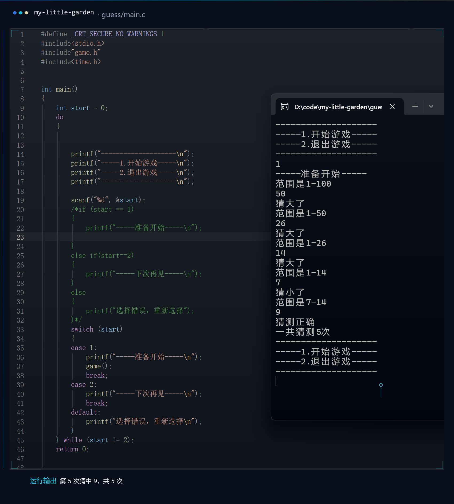

给扫雷的自动展开收尾
- 在做把「一次多翻几格」从随机捎带改成只看真正可翻的邻居，消掉原来的死循环。
- 在读《C 程序设计语言》第 4 章（函数与程序结构），配着课件慢慢啃。
- 卡在指针和数组的边界；还有 count() 里那个越界读——靠外圈全填 '0' 才碰巧得出对的结果。
About
刚入门 AI，数学和代码一起学。对模型、数据和工具都很好奇。
Now
这一栏比任何动画都更能说明我在哪：写一行就更新一行。
Log
只记真发生过的事。一条日志一篇小事，写不出细节就不写。
原来的「一次多翻几格」用 rand() 随机挑格子，一旦挑不到能翻的，while 就永远转下去。改成先把真正可翻的邻居收进数组、只在里面抽，再补一个「一个都没有就直接返回」。然后拿 200 个随机雷盘把安全格全点一遍，200 局全部判胜、0 局卡住，才敢说它不死了。
Pitfalls
每一条都是我真撞过的墙。能记住的坑，才不算白踩。
扫雷的「一次多翻几格」用 rand() 随机挑格子，挑不到能翻的，循环条件就永远为真。改成先把可翻的邻居收进数组，再补一句"一个都没有就直接返回"。
分数数列求和输出一直不对：1/2 在整数世界里等于 0。把其中一个操作数写成 1.0 才对——这是第一次真切理解类型。
猜数字里猜 40 明明偏小，却提示偏大。范围越收越窄，却永远不含答案——查了半天才发现是判断方向反了。
count() 数周围八格时会读到外圈下标。因为 start() 把整个 11×11 都填了 '0'，结果恰好是对的——属于"侥幸正确"，哪天外圈换成别的值就会出错。
补丁明明写进了文件，界面上却一点变化都没有。后来才想起要清缓存并重启进程——运行中的程序读的是启动那一刻的代码。
带中文注释的源文件被当成另一种编码读取，报的却是"字符串缺少终止符"这种牛头不对马嘴的错。先确认编码，再看语法错误。
Timeline
不算长的几个月，但每一步都还算数。
第一行 C 语言，第一次真正接触 AI。那时候还只会照着课本敲，但已经觉得这件事很有意思。
高数、线代、概率，慢慢啃。理解模型之前，先把语言学会。
把练习和笔记一点点搬进仓库：my-little-garden ↗
自动展开刚修完，正在拿随机盘面反复验；下一步是把「一次多翻几格」从随机改成规则展开。
还在写，等你一起见证。
Attempts
都是练习，不是作品。代码很短，但每一段都是自己一行行敲出来、跑通了才算数。
9×9 的盘面，10 颗雷随机布下。用一个 11×11 的数组把边界包起来，就不用单独处理越界；翻开格子时数它周围八格的雷数显示在格子上。把 71 个非雷格子全部翻开就算赢。菜单里选择开始还是退出，一局结束会回到菜单。目前是控制台版本，自动展开空格的功能还在写。
gcc game.c main.c -o game && ./game

随机生成 1 到 100 之间的一个数，每猜一次会告诉你「偏小」还是「偏大」，并把可选范围收窄成提示（猜 40 偏小就显示 40–100），越猜越接近。猜的次数有限，没猜中就直接公布答案。菜单用 do-while 写成，玩完一局可以接着再来。
gcc game.c main.c -o guess && ./guess
这些是刚开始学 C 语言时按顺序写的练习，从判断到循环再到数组，基本按难度排下来。
早期练习，有几处边界和写反的判断我没回头改，就照原样留着——它们记录的是当时真实的样子。
读入三个整数，用两次交换让它们从大到小输出。第一次写明白的两个变量怎么互换。
练的是：条件判断 + 变量的值传递。
Compare sizes/main.c按「四年一闰、百年不闰、四百年再闰」的规则，筛出 1000–2000 年之间的所有闰年。第一个把逻辑条件串起来的练习。
练的是：逻辑与算术的混合判断 + 循环扫描年份。
Leap year/main.c最短的一个：循环步长直接设成 3，输出 3 到 100 之间所有 3 的倍数。
练的是：for 的步长完全可以不是 1。
Multiples of 3/main.c累加 1/1 + 1/2 + … + 1/100，输出六位小数。也是在这里第一次踩到整数除法和浮点数的区别。
练的是：累加器 + 整数除法为什么会把小数吃掉。
Sum of fractions/main.c读入十个数存进数组，先求和再除以 10。第一次用数组配 for 循环存取数据。
练的是：数组和 for 循环第一次配在一起。
average/main.c读入两组各十个数，逐位交换后分别打印。把「交换」这个动作从单个变量扩展到了整组数据。
练的是：两个数组同步遍历 + 交换写成循环。
exchange/main.c数出 1 到 100 中数字 9 出现的次数，个位和十位分别判断，所以 99 要算两次。
练的是：用 % 10 和 / 10 拆出一个数的每一位。
find 9/main.c一边读一边比：把较大的值往后挪，扫描一遍后在末尾拿到最大值，不需要额外变量存最大值。
练的是：边读边比较，扫描一遍就拿到答案。
find max in 10/main.c只试除到 √i 就够，而且从 101 开始每次加 2 跳过偶数。第一个认真考虑「怎么算得更省」的练习。
练的是：嵌套循环 + 第一次为了"更快"改算法。
prime number from 100 to 200/main.c两个数各取余数，从 1 试到较小者，保留最后一个能同时整除的数。用最朴素的办法拿到了答案。
练的是：枚举求公约数——后来才知道欧几里得能快得多。
Greatest common divisor/main.cLibrary
在读、看完、搁置都摆出来——停在半路也是真实进度。
Learning
不是“精通”，是“正在学”——把进度条压在真实的位置上。
中间那个点是现在。每一个环都是"又从头来了一遍"：装环境、写错、改对、再补一处。转得慢，但一直在转。
C 语言打语法和内存的底子；Python 用来写脚本、玩数据，学着从语法走到 NumPy。
高数、线代、概率，慢慢啃。想让公式在纸上成立，也想让它在代码里跑起来。
学会提交、回滚、开分支。让每一次练习都留下痕迹，而不是散落在硬盘里。
Toolbox
按“我用它做过多少事”来标刻度，而不是按“我希望自己会多少”。
百分比诚实得有点扎眼，但它们会变。
Contact
如果你也在学 AI，欢迎一起交流。
最想要的信是这两种：一起学 AI 的朋友，聊今天踩了什么坑都行；以及能直接骂我代码的人——指出哪里写歪比夸我有用得多。